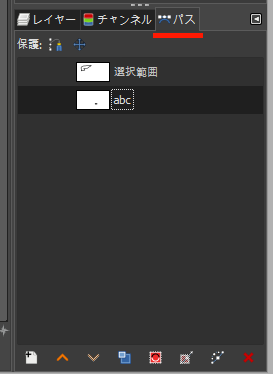

パスの概要
パスツールは曲線や直線を作成・操作するツールです。 作成されたパスから、選択範囲を作成したり描画したりすることができます。 また逆に、選択範囲からパスを作成したり、文字列からパスを作成したりもできます。
Tip
通常、選択範囲は、 矩形選択 や 楕円選択 などの選択ツールで活性レイヤー上に作成します。
また描画は、 ブラシで描画 や 鉛筆で描画 などの描画ツールで活性レイヤー上に行います。
文字列は テキストツール で作成します。
最も重要なことは、選択ツールで選択された選択範囲や、描画ツールで描画された線や囲いと異なり、パスはすべてのレイヤーから独立して作成・操作されるということです。 したがって一度作成したパスは、同一レイヤー内で移動できるだけでなく、別のレイヤー上での描画に再利用したり、後から再編集したりすることもできます。
作成済みのパスの一覧は、右パネルのドック下部のタブ パス を選択し、パスダイアログを開くことで確認できます。

レイヤーから独立しているというパスの特徴から、パスについて知っておくべきことを整理すると、以下のようになります。
- パスそのものの作成や編集
- 作成済みのパスによる選択範囲の作成や描画（パスからレイヤーへ）
- 選択範囲や文字列を基にしたパスの作成（レイヤーからパスへ）
これらの各事項について、次のページから順次解説していきます。
用語一覧
| 用語 | 英語 | 意味 |
|---|---|---|
| パス | paths tool | パスの編集や作成を行う |